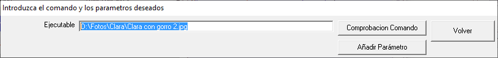
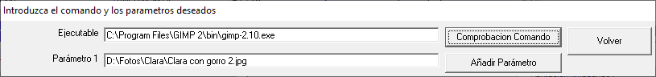

La visualización de documentos suele estar asociada a una determinada aplicación instalada en el PC. La asociación entre un determinado tipo de documento y la aplicación con la que se abre, se realiza a través de la extensión del fichero del documento. P.e., los ficheros con extensión, ".doc", o ".docx" pueden estar asociados a la aplicación Word, aunque también puede estar asociada a LibreOffice. Esta asociación se mantiene en el registro de Windows, y se puede ver y cambiar a través del Explorador de Windows: pulse sobre el fichero con el botón derecho del ratón y busque "Abrir con". Se presentarán todas las aplicaciones instaladas en el PC con las que lo pueden abrir.
El concepto de Opción permite elegir la aplicación que se quiere usar para abrir un determinado documento, independientemente de cual es la aplicación que tenga asociada su extensión.
Por ejemplo, la extensión del documento "D:\ACM\Productos ACM\Wind Farm Simulator\Cursos\Curso Mantenimiento Aerogeneradores.pdf" (PDF) puede estar asociado con la aplicación "Adobe Reader", y sin embargo, puede que queramos abrirlo con la aplicación "Foxit Reader" que permite edición (subrayados, comentarios, etc.)
Por otra parte, puede que el documento que queremos usar en la Opción no tenga una aplicación asociada.
La alternativa a estas situaciones consiste en asociar la aplicación (ejecutable) que queremos usar con el documento elegido. Para ello usamos la opción "Cambiar Comando" del menú de Opción. Las siguientes imágenes muestran un ejemplo.

Pulsamos una vez el botón "Añadir Parámetro" con lo que aparecerá una caja de texto titulada "Parámetro 1". Copiamos el contenido inicial de la caja de texto "Ejecutable" a esta nueva caja, y en "Ejectuable" copiamos la ubicación donde se encuentra la aplicación que queremos usar para abrir el documento. En este ejemplo elegimos el editor gráfico "GIMP". El botón "Comprobación Comando" nos permite comprobar que la Opción se ejecutará con éxito.
